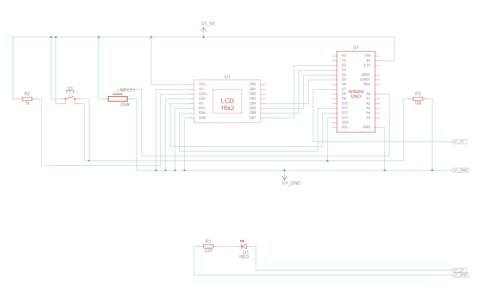
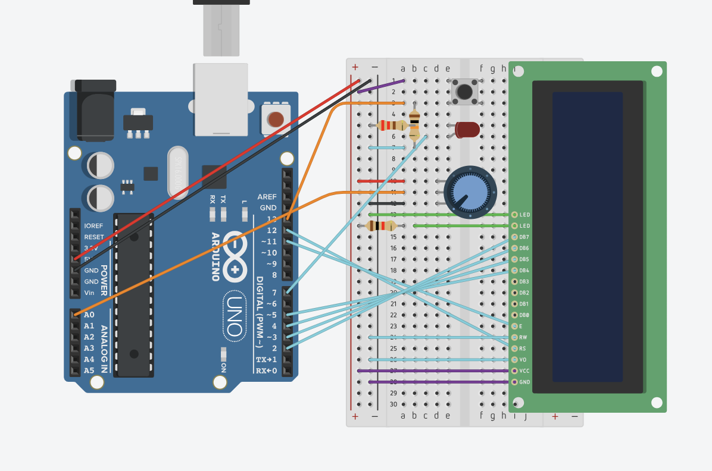
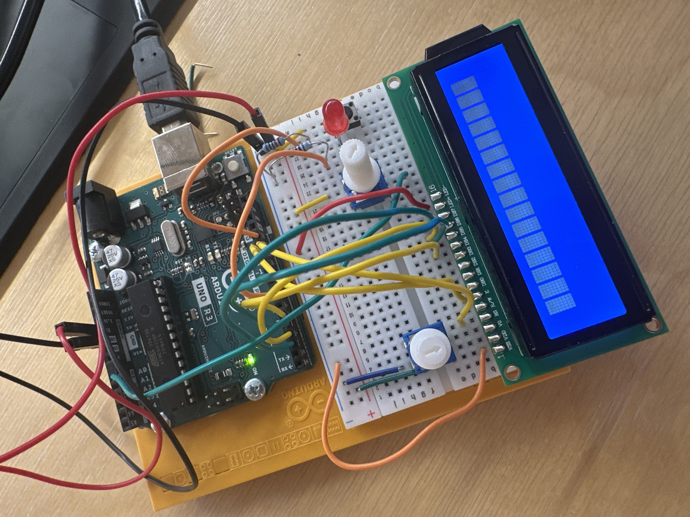

Arduino Project 4 - Discord Laundry Timer
IGME 470 - Final Project
Solving a Real Problem
My main problem was that I often forget to take out my clothes from the washer or dryer. I needed a tool that could remind me no matter where I am, and continue to remind me until I physically go to the laundry room... so that I can't simply stop the alarm on my phone and forget about it.
To solve this, I created a timer using Arduino that I can keep in my laundry room. When the timer ends, it sends periodic Discord notifications to my phone and computer until I physically press a button on the device to stop it. This ensures I can't ignore or dismiss the reminder without actually going to the laundry room.
Project Pitch
How It Works
The system consists of two parts: an Arduino physical timer with an LCD display, and a Python script running on my computer that monitors the Arduino via serial communication and sends Discord notifications.
The Arduino features a 16x2 LCD display that shows the current timer status and countdown. A potentiometer lets me set the timer duration (from 1 minute to 4 hours), perfect for different laundry cycles. When I start the laundry, I press a button to start the countdown. The LCD displays the remaining time in HH:MM:SS format.
When the timer reaches zero, the Arduino sends an "ALARM" signal over serial communication to the Python script. The Python script then sends a Discord webhook notification to my phone. If I don't physically go to the laundry room and press the stop button, the script continues to send reminder pings every 5 minutes until I do, ensuring I can't simply dismiss a notification and forget about my laundry.
Circuit Design

Parts used:
- 1x Arduino Uno R3
- 1x 250 kΩ Potentiometer
- 1x LCD 16 x 2
- 1x Pushbutton
- 1x 1 kΩ Resistor
- 1x 10 kΩ Resistor
- 1x Red LED
- 1x 220 Ω Resistor
The Code
Arduino Code
The Arduino code manages the LCD display, reads the potentiometer for timer settings, handles the start/stop button, and sends status updates via serial communication. Here's the complete code:
Click to view Arduino code
#include <LiquidCrystal.h>
LiquidCrystal lcd(12, 11, 5, 4, 3, 2);
const int buttonPin = 13;
const int potPin = A0;
const int ledPin = 7;
const int minTimerSeconds = 60; // Minimum 1 minute
const int maxTimerSeconds = 14400; // Maximum 4 hours
int timer = 3600; // Current countdown value
int selectedTimerSeconds = 3600; // Timer value selected by pot (default 60 min)
bool timerRunning = false;
bool alarmTriggered = false;
int onOffSwitchState = 0;
int previousOnOffSwitchState = 0;
int previousPotValue = -1;
unsigned long previousMillis = 0;
void setup()
{
Serial.begin(9600);
lcd.begin(16, 2);
// Initialize pins
pinMode(buttonPin, INPUT);
pinMode(potPin, INPUT);
pinMode(ledPin, OUTPUT);
digitalWrite(ledPin, LOW);
// Display initial screen
updateDisplay();
}
void loop()
{
// Read button state
onOffSwitchState = digitalRead(buttonPin);
// Handle start/stop timer
if (onOffSwitchState != previousOnOffSwitchState) {
if (onOffSwitchState == HIGH) {
timerRunning = !timerRunning;
if (timerRunning) {
//Start timer
timer = selectedTimerSeconds;
alarmTriggered = false;
previousMillis = millis();
digitalWrite(ledPin, HIGH);
Serial.println("START");
} else {
//Stop timer
timer = selectedTimerSeconds;
digitalWrite(ledPin, LOW);
Serial.println("STOP");
updateDisplay();
}
}
delay(50);
}
previousOnOffSwitchState = onOffSwitchState;
if (timerRunning) {
unsigned long currentMillis = millis();
// Update timer every second
if (currentMillis - previousMillis >= 1000) {
previousMillis = currentMillis;
timer--;
// Check if timer reached zero
if (timer <= 0) {
timer = 0;
if (!alarmTriggered) {
Serial.println("ALARM");
alarmTriggered = true;
}
}
updateDisplay();
}
} else {
// Only if timer isn't running, allow potentiometer timer adjustment
int potValue = analogRead(potPin);
// Map potentiometer values to minutes (0-255 mapped to 1-240 minutes)
int minutes = map(potValue, 0, 1023, 1, 240);
int newTimerSeconds = minutes * 60;
// Only update if value changed significantly
if (abs(newTimerSeconds - selectedTimerSeconds) >= 60) {
selectedTimerSeconds = newTimerSeconds;
timer = selectedTimerSeconds;
updateDisplay();
}
}
delay(10);
}
void updateDisplay()
{
lcd.clear();
lcd.setCursor(0, 0);
if (timerRunning) {
lcd.print("Running:");
} else {
lcd.print("Set Timer:");
}
lcd.setCursor(0, 1);
lcd.print(formatTimer(timer));
}
String formatTimer(int totalSeconds)
{
int hours = totalSeconds / 3600;
int minutes = (totalSeconds % 3600) / 60;
int secs = totalSeconds % 60;
char buffer[9];
// Format as HH:MM:SS
sprintf(buffer, "%02d:%02d:%02d", hours, minutes, secs);
return String(buffer);
}The Arduino continuously monitors the potentiometer when the timer isn't running, allowing you to adjust the countdown duration. When you press the button, it starts counting down from the set time. Every second, it updates the LCD display. When the timer reaches zero, it sends an "ALARM" message over serial and continues to send it until the button is pressed to acknowledge and stop the alarm.
Python Discord Notifier
The Python script runs on a computer and monitors the serial port for messages from the Arduino. When it receives an "ALARM" signal, it sends a Discord webhook notification. It then continues to send reminder pings every 5 minutes until it receives a "STOP" signal (when the physical button is pressed).
Click to view Python code
import serial
import time
import requests
from datetime import datetime
import sys
# Configuration
DISCORD_WEBHOOK_URL = "https://discord.com/api/webhooks/[WEBHOOK_ID_REDACTED]/[WEBHOOK_TOKEN_REDACTED]"
SERIAL_PORT = "COM3"
BAUD_RATE = 9600
PING_INTERVAL = 300 # Ping every 5 minutes
class DiscordAlarmNotifier:
def __init__(self, webhook_url, serial_port, baud_rate):
self.webhook_url = webhook_url
self.serial_port = serial_port
self.baud_rate = baud_rate
self.is_alarming = False
self.last_ping_time = 0
self.ser = None
def connect_serial(self):
"""Connect to Arduino via serial"""
try:
self.ser = serial.Serial(self.serial_port, self.baud_rate, timeout=1)
time.sleep(2)
print(f"Connected to Arduino on {self.serial_port}")
return True
except serial.SerialException as e:
print(f"Error connecting to serial port: {e}")
return False
def send_discord_notification(self, message, color=0xFF0000):
"""Send notification to Discord webhook"""
timestamp = datetime.now().strftime("%Y-%m-%d %H:%M:%S")
payload = {
"embeds": [{
"title": "⏰ Timer Alert",
"description": message,
"color": color,
"footer": {
"text": f"Timestamp: {timestamp}"
}
}]
}
try:
response = requests.post(self.webhook_url, json=payload)
if response.status_code == 204:
print(f"[{timestamp}] Notification sent: {message}")
return True
else:
print(f"Failed to send notification. Status code: {response.status_code}")
return False
except requests.exceptions.RequestException as e:
print(f"Error sending Discord notification: {e}")
return False
def run(self):
"""Main loop to monitor Arduino and send notifications"""
if not self.connect_serial():
return
print("Monitoring Arduino for timer events...")
print("Press Ctrl+C to exit\n")
try:
while True:
if self.ser.in_waiting > 0:
line = self.ser.readline().decode('utf-8').strip()
print(f"Received: {line}")
if line == "ALARM":
self.is_alarming = True
self.last_ping_time = time.time()
self.send_discord_notification(
"🚨 Timer has ended!!!",
color=0xFF0000 # Red
)
elif line == "STOP":
if self.is_alarming:
self.send_discord_notification(
"✅ Timer has been stopped.",
color=0x00FF00 # Green
)
self.is_alarming = False
elif line == "START":
print("Timer started")
# Send periodic pings while alarm is active
if self.is_alarming:
current_time = time.time()
if current_time - self.last_ping_time >= PING_INTERVAL:
self.send_discord_notification(
"⏰ Reminder: Timer alarm is still active!",
color=0xFFA500 # Orange
)
self.last_ping_time = current_time
time.sleep(0.1)
except KeyboardInterrupt:
print("\n\nExiting...")
finally:
if self.ser:
self.ser.close()
print("Serial connection closed")
def main():
# Validate webhook URL
if DISCORD_WEBHOOK_URL == "YOUR_WEBHOOK_URL_HERE":
print("ERROR: Please set your Discord webhook URL in the script!")
print("You can create a webhook in Discord: Server Settings > Integrations > Webhooks")
sys.exit(1)
notifier = DiscordAlarmNotifier(DISCORD_WEBHOOK_URL, SERIAL_PORT, BAUD_RATE)
notifier.run()
if __name__ == "__main__":
main()
The Python script uses the serial library to communicate with the Arduino and the requests library to send Discord webhook notifications. It maintains a class that tracks whether the alarm is active, and uses time differences to send periodic reminder pings.
Why This Solution Works
The key to this solution is the physical button requirement. Unlike a phone notification that can be swiped away, this system forces me to physically go to the laundry room to stop the alarm. The periodic reminders ensure that even if I'm distracted, I'll get another ping in 5 minutes.
The Discord integration means I receive notifications wherever I am and on whichever device: on my phone, computer, or tablet, grocery store, etc.
The adjustable timer (1 minute to 4 hours) covers everything from quick wash cycles to full drying cycles, making it versatile for different laundry needs. Of course, it also means that it can be used for many other things other than just a laundry timer, though this was what inspired the project.
Challenges and Difficulties
While developing this project, I encountered some technical challenges, primarily with the LCD (liquid crystal display) screen displaying the proper text. For a while, I struggled to get the LCD to display anything except white squares. After rebuilding the entire project, looking through forums, and more, I found out the whole issue was silly... I didn't have the LCD library installed.

Demo
Timer Display
The LCD display shows the countdown timer in real-time, updating every second. You can adjust the duration using the potentiometer before starting the timer.

Discord Notifications
When the timer reaches zero, the Python script sends a Discord webhook notification. It continues to send reminder pings every 5 minutes until the physical button is pressed.